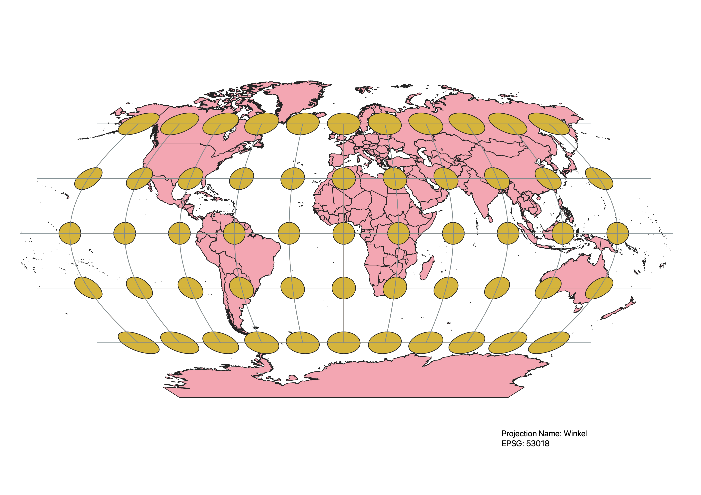
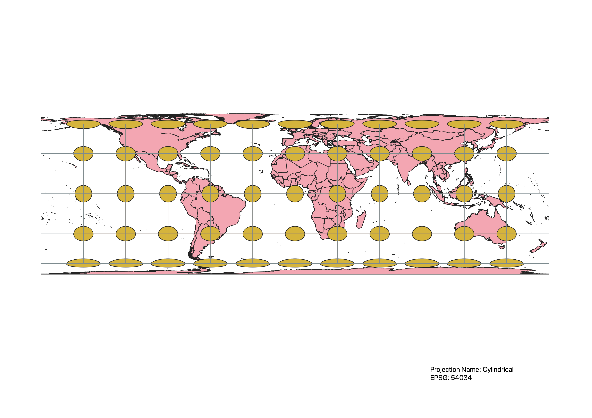
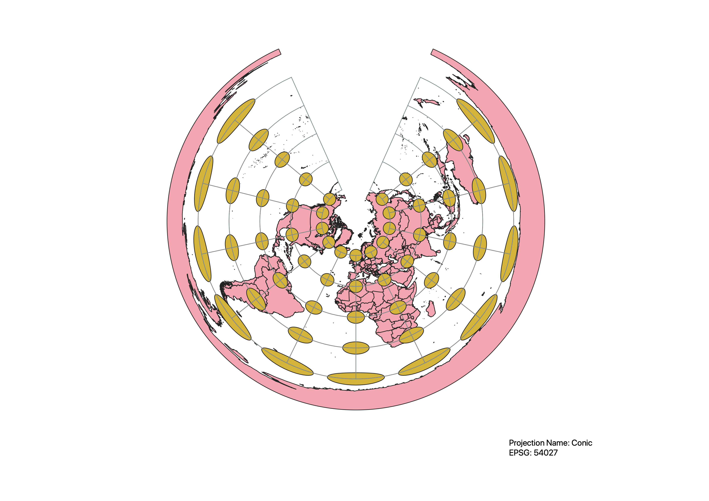
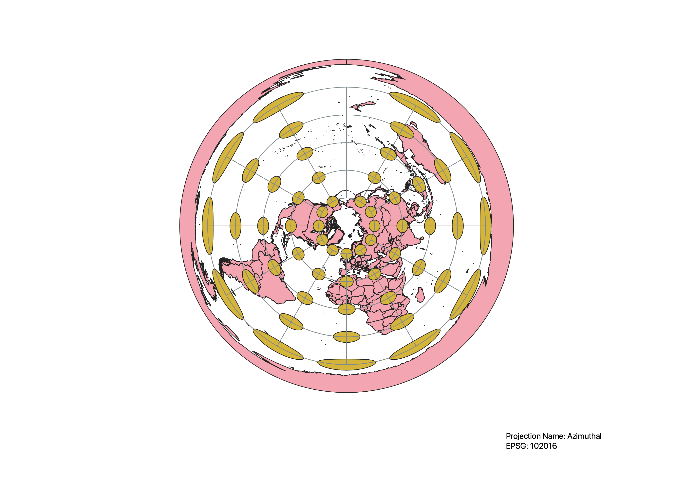
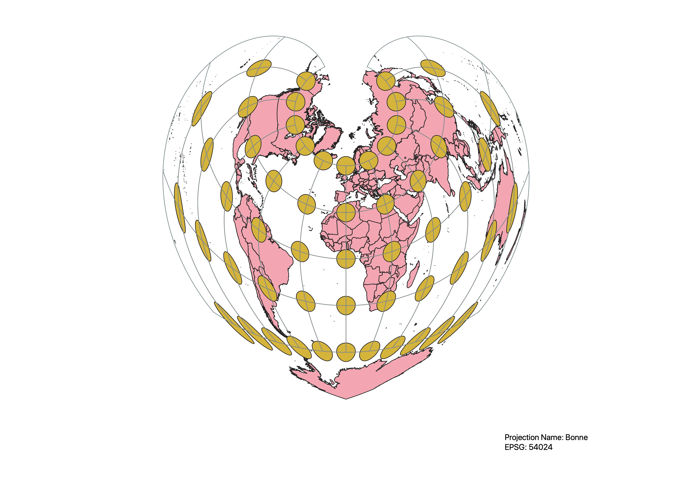

In this project I learned how to display images in different projections
Using QGIS, I searched for different map projections that have been created to display in the following images. These varying map projections show how the distortion of flattening the globe into a 2-D image affects the size and shape of the land. With the Coordinate Reference System (CRS), I was able to search for different map projections, such as Winkel and Azimuthal.
WGS84 Projection
This projection is commonly used for GPS and other navigation softwares because of its reference coordinate system.

Aitoff Projection
This projection is based off an ellipsoid shape. The Aitoff projection is a good compromise between size and shape distortion.

Pseudo Mercator Projection
This map projection prioritized the shape of continents/countries over the size, as the distortion at the poles of the earth are very elongated. This discrepancy causes Greenland to appear as the same size as Africa, but it is actually fourteen times smaller. Therefore, this distortion can be very misleading.

Winkel Tripel Projection
The Winkel Projection utilizes an ellipsoid to limit the amount of distortion in the map. This makes the projection good for general world map viewing, but has little other uses.

Transverse Mercator (Cylindrical) Projection
This projection maps the world by way of a horizontal cylinder. This causes size, distance, and direction distortion that increases in severity farther from the central meridian.

Conic Projection
This Conic map projection is mostly used for east-west direction because the farther removed from the standard parallel you go on the map increases the distortion.

Azimuthal Equidistant Projection
This projection is unique as all of its points are correct distances from the center point. Since all meridians appear straight, this projection is very useful for depiction of the poles. This Azimuthal Projection also preserves direction from the center point. However, scale is greatly distorted as you travel outward from the center point.

Bonne Projection
This is an equal-area projection that preserves scale and shape along the central meridian and standard parallel. However, distortion increases away from these lines. The Bonne Projection has been mostly used for projections of Europe and Asia.

World Stereographic Projection
This type projection of projection maps a sphere onto a plane, excepting for the projection point. This limits its useful properties as it cannot account for area. It does preserve angles which has made it prevalent in cartography.

Data used for this project
Download Natrual Earth 1:10m Cultural Vector